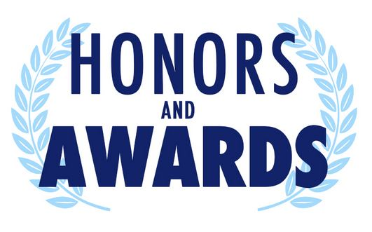

Honors, Awards, and Activities
Secret Level Clearance (U.S. Government)
Charter Appreciation Award - 17x recipient, 2017-2020
Scored 99th percentile (top 1%) on the military entrance examination
(ASVAB)
Military Awards
- Bronze Star Medal (BSM)
- Meritorious Service Medal (MSM)
- Army Commendation Medal (ARCOM)
- Army Achievement Medal (3x awarded) (AAM)
- Meritorious Unit Commendation (MUC)
- National Defense Service Medal (NDSM)
- Afghanistan Campaign Medal (2 stars)
- Global War on Terrorism Service Medal
- Army Service Ribbon
- Overseas Service Ribbon (2x award)
- Nato Medal (2x awarded)
College Awards
- Graduate with Honors (MA, May 2018)
- Graduate Magna Cum Laude (BBA, July 2009)
- Dean's List: Spring 2009, Fall 2008, Summer 2008, Spring 2008